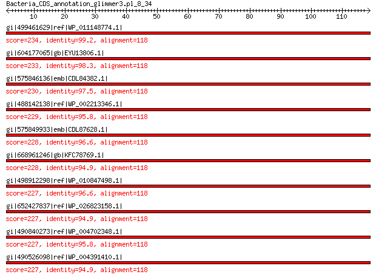

bitscore colors: <40, 40-50 , 50-80, 80-200, >200
 BLASTP 2.2.31+
Reference: Stephen F. Altschul, Thomas L. Madden, Alejandro A.
Schaffer, Jinghui Zhang, Zheng Zhang, Webb Miller, and David J.
Lipman (1997), "Gapped BLAST and PSI-BLAST: a new generation of
protein database search programs", Nucleic Acids Res. 25:3389-3402.
Reference for composition-based statistics: Alejandro A. Schaffer,
L. Aravind, Thomas L. Madden, Sergei Shavirin, John L. Spouge, Yuri
I. Wolf, Eugene V. Koonin, and Stephen F. Altschul (2001),
"Improving the accuracy of PSI-BLAST protein database searches with
composition-based statistics and other refinements", Nucleic Acids
Res. 29:2994-3005.
Database: All non-redundant GenBank CDS translations+PDB+SwissProt+PIR+PRF
excluding environmental samples from WGS projects
49,011,213 sequences; 17,563,301,199 total letters
Query= Bacteria_CDS_annotation_glimmer3.pl_8_34
Length=118
Score E
Sequences producing significant alignments: (Bits) Value
gi|499461629|ref|WP_011148774.1| MULTISPECIES: 30S ribosomal pro... 234 6e-77
gi|604177065|gb|EYU13806.1| SSU ribosomal protein S13P 233 2e-76
gi|575846136|emb|CDL84382.1| 30S ribosomal protein S13 230 3e-75
gi|488142138|ref|WP_002213346.1| MULTISPECIES: 30S ribosomal pro... 229 1e-74
gi|575849933|emb|CDL87628.1| 30S ribosomal protein S13 228 2e-74
gi|668961246|gb|KFC78769.1| SSU ribosomal protein S13p (S18e) 228 3e-74
gi|498912298|ref|WP_010847498.1| 30S ribosomal protein S13 227 3e-74
gi|652427837|ref|WP_026823158.1| 30S ribosomal protein S13 227 3e-74
gi|490840273|ref|WP_004702348.1| MULTISPECIES: 30S ribosomal pro... 227 4e-74
gi|490526098|ref|WP_004391410.1| 30S ribosomal protein S13 227 5e-74
>gi|499461629|ref|WP_011148774.1| MULTISPECIES: 30S ribosomal protein S13 [Photorhabdus]
gi|37528522|ref|NP_931867.1| 30S ribosomal protein S13 [Photorhabdus luminescens subsp. laumondii
TTO1]
gi|253991667|ref|YP_003043023.1| 30s ribosomal subunit protein s13 [Photorhabdus asymbiotica]
gi|81418034|sp|Q7MYH2.1|RS13_PHOLL RecName: Full=30S ribosomal protein S13 [Photorhabdus luminescens
subsp. laumondii TTO1]
gi|36787960|emb|CAE17077.1| 30S ribosomal protein S13 [Photorhabdus luminescens subsp. laumondii
TTO1]
gi|253783117|emb|CAQ86282.1| 30s ribosomal subunit protein s13 [Photorhabdus asymbiotica]
gi|530711199|gb|EQC02060.1| 30S ribosomal protein S13 [Photorhabdus temperata subsp. temperata
M1021]
gi|550875179|gb|ERT14212.1| 30S ribosomal protein S13 [Photorhabdus temperata J3]
gi|572731313|gb|ETS29502.1| SSU ribosomal protein S13P [Photorhabdus temperata subsp. khanii
NC19]
gi|662546844|gb|KER01482.1| SSU ribosomal protein S13P [Photorhabdus temperata subsp. temperata
Meg1]
Length=118
Score = 234 bits (597), Expect = 6e-77, Method: Compositional matrix adjust.
Identities = 117/118 (99%), Positives = 118/118 (100%), Gaps = 0/118 (0%)
Query 1 VARIAGINIPDQKHTVIALTSIYGIGKTRSQAICAAAGIAEHVKISELSEEQIDKLRDEV 60
+ARIAGINIPDQKHTVIALTSIYGIGKTRSQAICAAAGIAEHVKISELSEEQIDKLRDEV
Sbjct 1 MARIAGINIPDQKHTVIALTSIYGIGKTRSQAICAAAGIAEHVKISELSEEQIDKLRDEV 60
Query 61 AKYVVEGDLRREVTLSIKRLMDLGTYRGLRHRRGLPVRGQRTKTNARTRKGPRKPIKK 118
AKYVVEGDLRREVTLSIKRLMDLGTYRGLRHRRGLPVRGQRTKTNARTRKGPRKPIKK
Sbjct 61 AKYVVEGDLRREVTLSIKRLMDLGTYRGLRHRRGLPVRGQRTKTNARTRKGPRKPIKK 118
>gi|604177065|gb|EYU13806.1| SSU ribosomal protein S13P [Photorhabdus luminescens BA1]
Length=118
Score = 233 bits (594), Expect = 2e-76, Method: Compositional matrix adjust.
Identities = 116/118 (98%), Positives = 118/118 (100%), Gaps = 0/118 (0%)
Query 1 VARIAGINIPDQKHTVIALTSIYGIGKTRSQAICAAAGIAEHVKISELSEEQIDKLRDEV 60
+ARIAGINIPDQKHTVIALTSIYGIGKTRSQAICAAAGIAEHVKISELSEEQIDKLRDEV
Sbjct 1 MARIAGINIPDQKHTVIALTSIYGIGKTRSQAICAAAGIAEHVKISELSEEQIDKLRDEV 60
Query 61 AKYVVEGDLRREVTLSIKRLMDLGTYRGLRHRRGLPVRGQRTKTNARTRKGPRKPIKK 118
A+YVVEGDLRREVTLSIKRLMDLGTYRGLRHRRGLPVRGQRTKTNARTRKGPRKPIKK
Sbjct 61 ARYVVEGDLRREVTLSIKRLMDLGTYRGLRHRRGLPVRGQRTKTNARTRKGPRKPIKK 118
>gi|575846136|emb|CDL84382.1| 30S ribosomal protein S13 [Xenorhabdus szentirmaii DSM 16338]
gi|661559779|emb|CDG16010.1| 30S ribosomal protein S13 [Xenorhabdus doucetiae]
Length=118
Score = 230 bits (586), Expect = 3e-75, Method: Compositional matrix adjust.
Identities = 115/118 (97%), Positives = 117/118 (99%), Gaps = 0/118 (0%)
Query 1 VARIAGINIPDQKHTVIALTSIYGIGKTRSQAICAAAGIAEHVKISELSEEQIDKLRDEV 60
+ARIAGINIPDQKHTVIALTSIYGIGKTRSQAICAAAGIAE+VKISELSEEQIDKLRDEV
Sbjct 1 MARIAGINIPDQKHTVIALTSIYGIGKTRSQAICAAAGIAENVKISELSEEQIDKLRDEV 60
Query 61 AKYVVEGDLRREVTLSIKRLMDLGTYRGLRHRRGLPVRGQRTKTNARTRKGPRKPIKK 118
AKYVVEGDLRREVTLSIKRLMDLG YRGLRHRRGLPVRGQRTKTNARTRKGPRKPIKK
Sbjct 61 AKYVVEGDLRREVTLSIKRLMDLGCYRGLRHRRGLPVRGQRTKTNARTRKGPRKPIKK 118
>gi|488142138|ref|WP_002213346.1| MULTISPECIES: 30S ribosomal protein S13 [Yersinia]
gi|22127882|ref|NP_671305.1| 30S ribosomal protein S13 [Yersinia pestis KIM10+]
gi|45440089|ref|NP_991628.1| 30S ribosomal protein S13 [Yersinia pestis biovar Microtus str.
91001]
gi|51597966|ref|YP_072157.1| 30S ribosomal protein S13 [Yersinia pseudotuberculosis IP 32953]
gi|108809233|ref|YP_653149.1| 30S ribosomal protein S13 [Yersinia pestis Antiqua]
gi|108813998|ref|YP_649765.1| 30S ribosomal protein S13 [Yersinia pestis Nepal516]
gi|145597472|ref|YP_001161547.1| 30S ribosomal protein S13 [Yersinia pestis Pestoides F]
gi|153948869|ref|YP_001402841.1| 30S ribosomal protein S13 [Yersinia pseudotuberculosis IP 31758]
gi|162419404|ref|YP_001605194.1| 30S ribosomal protein S13 [Yersinia pestis Angola]
gi|170022566|ref|YP_001719071.1| 30S ribosomal protein S13 [Yersinia pseudotuberculosis YPIII]
gi|186897162|ref|YP_001874274.1| 30S ribosomal protein S13 [Yersinia pseudotuberculosis PB1/+]
gi|218927437|ref|YP_002345312.1| 30S ribosomal protein S13 [Yersinia pestis CO92]
gi|294502306|ref|YP_003566368.1| 30S ribosomal protein S13 [Yersinia pestis Z176003]
gi|384120790|ref|YP_005503410.1| 30S ribosomal protein S13 [Yersinia pestis D106004]
gi|384124673|ref|YP_005507287.1| 30S ribosomal protein S13 [Yersinia pestis D182038]
gi|384137792|ref|YP_005520494.1| 30S ribosomal protein S13 [Yersinia pestis A1122]
gi|384412860|ref|YP_005622222.1| 30S ribosomal protein S13 [Yersinia pestis biovar Medievalis
str. Harbin 35]
gi|32363373|sp|Q8ZJ90.1|RS13_YERPE RecName: Full=30S ribosomal protein S13 [Yersinia pestis]
gi|81638250|sp|Q664U3.1|RS13_YERPS RecName: Full=30S ribosomal protein S13 [Yersinia pseudotuberculosis
IP 32953]
gi|123072596|sp|Q1C2W8.1|RS13_YERPA RecName: Full=30S ribosomal protein S13 [Yersinia pestis Antiqua]
gi|123246110|sp|Q1CCW5.1|RS13_YERPN RecName: Full=30S ribosomal protein S13 [Yersinia pestis Nepal516]
gi|158706296|sp|A4TH12.1|RS13_YERPP RecName: Full=30S ribosomal protein S13 [Yersinia pestis Pestoides
F]
gi|166991605|sp|A7FNL3.1|RS13_YERP3 RecName: Full=30S ribosomal protein S13 [Yersinia pseudotuberculosis
IP 31758]
gi|226712809|sp|B2K515.1|RS13_YERPB RecName: Full=30S ribosomal protein S13 [Yersinia pseudotuberculosis
PB1/+]
gi|226712810|sp|A9R915.1|RS13_YERPG RecName: Full=30S ribosomal protein S13 [Yersinia pestis Angola]
gi|226712811|sp|B1JIY3.1|RS13_YERPY RecName: Full=30S ribosomal protein S13 [Yersinia pseudotuberculosis
YPIII]
gi|21961018|gb|AAM87556.1|AE014003_14 30S ribosomal subunit protein S13 [Yersinia pestis KIM10+]
gi|45434944|gb|AAS60505.1| 30S ribosomal protein S13 [Yersinia pestis biovar Microtus str.
91001]
gi|51591248|emb|CAH22914.1| 30S ribosomal protein S13 [Yersinia pseudotuberculosis IP 32953]
gi|108777646|gb|ABG20165.1| SSU ribosomal protein S13P [Yersinia pestis Nepal516]
gi|108781146|gb|ABG15204.1| SSU ribosomal protein S13P [Yersinia pestis Antiqua]
gi|115346048|emb|CAL18914.1| 30S ribosomal protein S13 [Yersinia pestis CO92]
gi|145209168|gb|ABP38575.1| SSU ribosomal protein S13P [Yersinia pestis Pestoides F]
gi|149290129|gb|EDM40206.1| 30S ribosomal protein S13 [Yersinia pestis CA88-4125]
gi|152960364|gb|ABS47825.1| ribosomal protein S13 [Yersinia pseudotuberculosis IP 31758]
gi|162352219|gb|ABX86167.1| ribosomal protein S13 [Yersinia pestis Angola]
gi|165911725|gb|EDR30381.1| ribosomal protein S13 [Yersinia pestis biovar Orientalis str.
IP275]
gi|165920151|gb|EDR37452.1| ribosomal protein S13 [Yersinia pestis biovar Orientalis str.
F1991016]
gi|165990573|gb|EDR42874.1| ribosomal protein S13 [Yersinia pestis biovar Antiqua str. E1979001]
gi|166205539|gb|EDR50019.1| ribosomal protein S13 [Yersinia pestis biovar Antiqua str. B42003004]
gi|166962688|gb|EDR58709.1| ribosomal protein S13 [Yersinia pestis biovar Orientalis str.
MG05-1020]
gi|167051013|gb|EDR62421.1| ribosomal protein S13 [Yersinia pestis biovar Antiqua str. UG05-0454]
gi|167055400|gb|EDR65194.1| ribosomal protein S13 [Yersinia pestis biovar Mediaevalis str.
K1973002]
gi|169749100|gb|ACA66618.1| ribosomal protein S13 [Yersinia pseudotuberculosis YPIII]
gi|186700188|gb|ACC90817.1| ribosomal protein S13 [Yersinia pseudotuberculosis PB1/+]
gi|229678647|gb|EEO74752.1| 30S ribosomal subunit protein S13 [Yersinia pestis Nepal516]
gi|229690481|gb|EEO82535.1| 30S ribosomal subunit protein S13 [Yersinia pestis biovar Orientalis
str. India 195]
gi|229696455|gb|EEO86502.1| 30S ribosomal subunit protein S13 [Yersinia pestis biovar Orientalis
str. PEXU2]
gi|229706355|gb|EEO92362.1| 30S ribosomal subunit protein S13 [Yersinia pestis Pestoides
A]
gi|262360386|gb|ACY57107.1| 30S ribosomal protein S13 [Yersinia pestis D106004]
gi|262364337|gb|ACY60894.1| 30S ribosomal protein S13 [Yersinia pestis D182038]
gi|270336757|gb|EFA47534.1| 30S ribosomal protein S13 [Yersinia pestis KIM D27]
gi|294352765|gb|ADE63106.1| 30S ribosomal protein S13 [Yersinia pestis Z176003]
gi|320013364|gb|ADV96935.1| 30S ribosomal subunit protein S13 [Yersinia pestis biovar Medievalis
str. Harbin 35]
gi|342852921|gb|AEL71474.1| 30S ribosomal protein S13 [Yersinia pestis A1122]
gi|391433221|gb|EIQ94578.1| 30S ribosomal protein S13 [Yersinia pestis PY-01]
gi|391434047|gb|EIQ95291.1| 30S ribosomal protein S13 [Yersinia pestis PY-02]
gi|391436845|gb|EIQ97765.1| 30S ribosomal protein S13 [Yersinia pestis PY-03]
gi|391449115|gb|EIR08864.1| 30S ribosomal protein S13 [Yersinia pestis PY-04]
gi|391449696|gb|EIR09394.1| 30S ribosomal protein S13 [Yersinia pestis PY-05]
gi|391451954|gb|EIR11410.1| 30S ribosomal protein S13 [Yersinia pestis PY-06]
gi|391465096|gb|EIR23319.1| 30S ribosomal protein S13 [Yersinia pestis PY-07]
gi|391466632|gb|EIR24688.1| 30S ribosomal protein S13 [Yersinia pestis PY-08]
gi|391468780|gb|EIR26622.1| 30S ribosomal protein S13 [Yersinia pestis PY-09]
gi|391482552|gb|EIR38994.1| 30S ribosomal protein S13 [Yersinia pestis PY-10]
gi|391483077|gb|EIR39472.1| 30S ribosomal protein S13 [Yersinia pestis PY-12]
gi|391483421|gb|EIR39780.1| 30S ribosomal protein S13 [Yersinia pestis PY-11]
gi|391497369|gb|EIR52236.1| 30S ribosomal protein S13 [Yersinia pestis PY-13]
gi|391498331|gb|EIR53112.1| 30S ribosomal protein S13 [Yersinia pestis PY-15]
gi|391501862|gb|EIR56222.1| 30S ribosomal protein S13 [Yersinia pestis PY-14]
gi|391512945|gb|EIR66217.1| 30S ribosomal protein S13 [Yersinia pestis PY-16]
gi|391514586|gb|EIR67678.1| 30S ribosomal protein S13 [Yersinia pestis PY-19]
gi|391516223|gb|EIR69139.1| 30S ribosomal protein S13 [Yersinia pestis PY-25]
gi|391528602|gb|EIR80403.1| 30S ribosomal protein S13 [Yersinia pestis PY-29]
gi|391531470|gb|EIR82962.1| 30S ribosomal protein S13 [Yersinia pestis PY-34]
gi|391532700|gb|EIR84057.1| 30S ribosomal protein S13 [Yersinia pestis PY-32]
gi|391545638|gb|EIR95704.1| 30S ribosomal protein S13 [Yersinia pestis PY-36]
gi|391547343|gb|EIR97247.1| 30S ribosomal protein S13 [Yersinia pestis PY-42]
gi|391548082|gb|EIR97918.1| 30S ribosomal protein S13 [Yersinia pestis PY-45]
gi|391561696|gb|EIS10202.1| 30S ribosomal protein S13 [Yersinia pestis PY-46]
gi|391562816|gb|EIS11194.1| 30S ribosomal protein S13 [Yersinia pestis PY-47]
gi|391564962|gb|EIS13119.1| 30S ribosomal protein S13 [Yersinia pestis PY-48]
gi|391577098|gb|EIS23567.1| 30S ribosomal protein S13 [Yersinia pestis PY-52]
gi|391577919|gb|EIS24260.1| 30S ribosomal protein S13 [Yersinia pestis PY-53]
gi|391589094|gb|EIS34035.1| 30S ribosomal protein S13 [Yersinia pestis PY-55]
gi|391592688|gb|EIS37077.1| 30S ribosomal protein S13 [Yersinia pestis PY-54]
gi|391593225|gb|EIS37554.1| 30S ribosomal protein S13 [Yersinia pestis PY-56]
gi|391606023|gb|EIS48805.1| 30S ribosomal protein S13 [Yersinia pestis PY-60]
gi|391607998|gb|EIS50536.1| 30S ribosomal protein S13 [Yersinia pestis PY-58]
gi|391608691|gb|EIS51156.1| 30S ribosomal protein S13 [Yersinia pestis PY-59]
gi|391620649|gb|EIS61782.1| 30S ribosomal protein S13 [Yersinia pestis PY-61]
gi|391621559|gb|EIS62587.1| 30S ribosomal protein S13 [Yersinia pestis PY-63]
gi|391629990|gb|EIS69827.1| 30S ribosomal protein S13 [Yersinia pestis PY-64]
gi|391632096|gb|EIS71661.1| 30S ribosomal protein S13 [Yersinia pestis PY-65]
gi|391643363|gb|EIS81540.1| 30S ribosomal protein S13 [Yersinia pestis PY-71]
gi|391646134|gb|EIS83925.1| 30S ribosomal protein S13 [Yersinia pestis PY-72]
gi|391649594|gb|EIS86966.1| 30S ribosomal protein S13 [Yersinia pestis PY-66]
gi|391655932|gb|EIS92615.1| 30S ribosomal protein S13 [Yersinia pestis PY-76]
gi|391662891|gb|EIS98786.1| 30S ribosomal protein S13 [Yersinia pestis PY-88]
gi|391667992|gb|EIT03268.1| 30S ribosomal protein S13 [Yersinia pestis PY-89]
gi|391669448|gb|EIT04578.1| 30S ribosomal protein S13 [Yersinia pestis PY-90]
gi|391673075|gb|EIT07830.1| 30S ribosomal protein S13 [Yersinia pestis PY-91]
gi|391687113|gb|EIT20459.1| 30S ribosomal protein S13 [Yersinia pestis PY-93]
gi|391688699|gb|EIT21894.1| 30S ribosomal protein S13 [Yersinia pestis PY-92]
gi|391690005|gb|EIT23081.1| 30S ribosomal protein S13 [Yersinia pestis PY-94]
gi|391701262|gb|EIT33286.1| 30S ribosomal protein S13 [Yersinia pestis PY-95]
gi|391704433|gb|EIT36092.1| 30S ribosomal protein S13 [Yersinia pestis PY-96]
gi|391705035|gb|EIT36635.1| 30S ribosomal protein S13 [Yersinia pestis PY-98]
gi|391715899|gb|EIT46398.1| 30S ribosomal protein S13 [Yersinia pestis PY-99]
gi|391720688|gb|EIT50688.1| 30S ribosomal protein S13 [Yersinia pestis PY-100]
gi|391721245|gb|EIT51199.1| 30S ribosomal protein S13 [Yersinia pestis PY-101]
gi|391731691|gb|EIT60360.1| 30S ribosomal protein S13 [Yersinia pestis PY-102]
gi|391734426|gb|EIT62687.1| 30S ribosomal protein S13 [Yersinia pestis PY-103]
gi|391737523|gb|EIT65400.1| 30S ribosomal protein S13 [Yersinia pestis PY-113]
gi|411177977|gb|EKS47989.1| 30S ribosomal protein S13 [Yersinia pestis INS]
gi|550619977|gb|ERP71248.1| 30S ribosomal protein S13 [Yersinia pestis S3]
gi|550620598|gb|ERP71836.1| 30S ribosomal protein S13 [Yersinia pestis 24H]
gi|550631529|gb|ERP82066.1| 30S ribosomal protein S13 [Yersinia pestis 9]
gi|566684782|dbj|GAE12476.1| 30S ribosomal protein S13 [Yersinia pseudotuberculosis NBRC 105692]
gi|588286206|gb|AHK18942.1| 30S ribosomal protein S13 [Yersinia similis]
gi|594136721|gb|EXU71577.1| 30S ribosomal protein S13 [Yersinia pestis EV NIIEG]
gi|668663787|gb|KFB60080.1| 30S ribosomal protein S13 [Yersinia pestis subsp. pestis]
Length=118
Score = 229 bits (583), Expect = 1e-74, Method: Compositional matrix adjust.
Identities = 113/118 (96%), Positives = 117/118 (99%), Gaps = 0/118 (0%)
Query 1 VARIAGINIPDQKHTVIALTSIYGIGKTRSQAICAAAGIAEHVKISELSEEQIDKLRDEV 60
+ARIAGINIPDQKHTVIALT+I+GIGKTRSQAIC AAGIAEHVKISELSEEQI+KLRDEV
Sbjct 1 MARIAGINIPDQKHTVIALTAIFGIGKTRSQAICVAAGIAEHVKISELSEEQIEKLRDEV 60
Query 61 AKYVVEGDLRREVTLSIKRLMDLGTYRGLRHRRGLPVRGQRTKTNARTRKGPRKPIKK 118
AKYVVEGDLRREVTLSIKRLMDLGTYRGLRHRRGLPVRGQRTKTNARTRKGPRKPIKK
Sbjct 61 AKYVVEGDLRREVTLSIKRLMDLGTYRGLRHRRGLPVRGQRTKTNARTRKGPRKPIKK 118
>gi|575849933|emb|CDL87628.1| 30S ribosomal protein S13 [Xenorhabdus cabanillasii JM26]
gi|661566752|emb|CDG23154.1| 30S ribosomal protein S13 [Xenorhabdus poinarii G6]
Length=118
Score = 228 bits (581), Expect = 2e-74, Method: Compositional matrix adjust.
Identities = 114/118 (97%), Positives = 116/118 (98%), Gaps = 0/118 (0%)
Query 1 VARIAGINIPDQKHTVIALTSIYGIGKTRSQAICAAAGIAEHVKISELSEEQIDKLRDEV 60
+ARIAGINIPDQKHTVIALTSIYGIGKTRSQAIC AAGIAE+VKISELSEEQIDKLRDEV
Sbjct 1 MARIAGINIPDQKHTVIALTSIYGIGKTRSQAICVAAGIAENVKISELSEEQIDKLRDEV 60
Query 61 AKYVVEGDLRREVTLSIKRLMDLGTYRGLRHRRGLPVRGQRTKTNARTRKGPRKPIKK 118
AKYVVEGDLRREVTLSIKRLMDLG YRGLRHRRGLPVRGQRTKTNARTRKGPRKPIKK
Sbjct 61 AKYVVEGDLRREVTLSIKRLMDLGCYRGLRHRRGLPVRGQRTKTNARTRKGPRKPIKK 118
>gi|668961246|gb|KFC78769.1| SSU ribosomal protein S13p (S18e) [Ewingella americana ATCC 33852]
Length=118
Score = 228 bits (580), Expect = 3e-74, Method: Compositional matrix adjust.
Identities = 112/118 (95%), Positives = 118/118 (100%), Gaps = 0/118 (0%)
Query 1 VARIAGINIPDQKHTVIALTSIYGIGKTRSQAICAAAGIAEHVKISELSEEQIDKLRDEV 60
+ARIAGINIPDQKHTVIALTSIYGIGKTRSQAICAA+GIAE+VKISELSEEQI+KLRDEV
Sbjct 1 MARIAGINIPDQKHTVIALTSIYGIGKTRSQAICAASGIAENVKISELSEEQIEKLRDEV 60
Query 61 AKYVVEGDLRREVTLSIKRLMDLGTYRGLRHRRGLPVRGQRTKTNARTRKGPRKPIKK 118
AK++VEGDLRREVTLSIKRLMDLGTYRGLRHRRGLPVRGQRTKTNARTRKGPRKPIKK
Sbjct 61 AKFIVEGDLRREVTLSIKRLMDLGTYRGLRHRRGLPVRGQRTKTNARTRKGPRKPIKK 118
>gi|498912298|ref|WP_010847498.1| 30S ribosomal protein S13 [Xenorhabdus nematophila]
gi|300721388|ref|YP_003710659.1| 30S ribosomal protein S13 [Xenorhabdus nematophila ATCC 19061]
gi|297627876|emb|CBJ88422.1| 30S ribosomal subunit protein S13 [Xenorhabdus nematophila ATCC
19061]
gi|484362909|emb|CCW30298.1| 30S ribosomal protein S13 [Xenorhabdus nematophila F1]
Length=118
Score = 227 bits (579), Expect = 3e-74, Method: Compositional matrix adjust.
Identities = 114/118 (97%), Positives = 116/118 (98%), Gaps = 0/118 (0%)
Query 1 VARIAGINIPDQKHTVIALTSIYGIGKTRSQAICAAAGIAEHVKISELSEEQIDKLRDEV 60
+ARIAGINIPDQKHTVIALTSIYGIGKTRSQAICAAAGIAE+VKI ELSEEQIDKLRDEV
Sbjct 1 MARIAGINIPDQKHTVIALTSIYGIGKTRSQAICAAAGIAENVKIRELSEEQIDKLRDEV 60
Query 61 AKYVVEGDLRREVTLSIKRLMDLGTYRGLRHRRGLPVRGQRTKTNARTRKGPRKPIKK 118
AKYVVEGDLRREVTLSIKRLMDLG YRGLRHRRGLPVRGQRTKTNARTRKGPRKPIKK
Sbjct 61 AKYVVEGDLRREVTLSIKRLMDLGCYRGLRHRRGLPVRGQRTKTNARTRKGPRKPIKK 118
>gi|652427837|ref|WP_026823158.1| 30S ribosomal protein S13 [Arsenophonus nasoniae]
gi|284006141|emb|CBA71383.1| 30S ribosomal protein S13 [Arsenophonus nasoniae]
Length=118
Score = 227 bits (579), Expect = 3e-74, Method: Compositional matrix adjust.
Identities = 112/118 (95%), Positives = 116/118 (98%), Gaps = 0/118 (0%)
Query 1 VARIAGINIPDQKHTVIALTSIYGIGKTRSQAICAAAGIAEHVKISELSEEQIDKLRDEV 60
+ARIAGINIPD KHTVIALTSIYGIGKTRSQ+ICAA+GIAEHVKISELSEEQIDKLRDEV
Sbjct 1 MARIAGINIPDHKHTVIALTSIYGIGKTRSQSICAASGIAEHVKISELSEEQIDKLRDEV 60
Query 61 AKYVVEGDLRREVTLSIKRLMDLGTYRGLRHRRGLPVRGQRTKTNARTRKGPRKPIKK 118
AKY+VEGDLRREVTLSIKRLMDLG YRGLRHRRGLPVRGQRTKTNARTRKGPRKPIKK
Sbjct 61 AKYIVEGDLRREVTLSIKRLMDLGCYRGLRHRRGLPVRGQRTKTNARTRKGPRKPIKK 118
>gi|490840273|ref|WP_004702348.1| MULTISPECIES: 30S ribosomal protein S13 [Yersinia]
gi|123444076|ref|YP_001008046.1| 30S ribosomal protein S13 [Yersinia enterocolitica subsp. enterocolitica
8081]
gi|332163239|ref|YP_004299816.1| 30S ribosomal protein S13 [Yersinia enterocolitica subsp. palearctica
105.5R(r)]
gi|386310752|ref|YP_006006808.1| 30S ribosomal protein S13 [Yersinia enterocolitica subsp. palearctica
Y11]
gi|158706295|sp|A1JS04.1|RS13_YERE8 RecName: Full=30S ribosomal protein S13 [Yersinia enterocolitica
subsp. enterocolitica 8081]
gi|122091037|emb|CAL13920.1| 30S ribosomal protein S13 [Yersinia enterocolitica subsp. enterocolitica
8081]
gi|238703079|gb|EEP95622.1| 30S ribosomal protein S13 [Yersinia aldovae ATCC 35236]
gi|238707690|gb|EEQ00050.1| 30S ribosomal protein S13 [Yersinia ruckeri ATCC 29473]
gi|238709096|gb|EEQ01343.1| 30S ribosomal protein S13 [Yersinia rohdei ATCC 43380]
gi|238715982|gb|EEQ07968.1| 30S ribosomal protein S13 [Yersinia bercovieri ATCC 43970]
gi|238718858|gb|EEQ10673.1| 30S ribosomal protein S13 [Yersinia mollaretii ATCC 43969]
gi|238722917|gb|EEQ14567.1| 30S ribosomal protein S13 [Yersinia frederiksenii ATCC 33641]
gi|238727811|gb|EEQ19335.1| 30S ribosomal protein S13 [Yersinia intermedia ATCC 29909]
gi|318607723|emb|CBY29221.1| SSU ribosomal protein S13p (S18e) [Yersinia enterocolitica subsp.
palearctica Y11]
gi|325667469|gb|ADZ44113.1| 30S ribosomal protein S13 [Yersinia enterocolitica subsp. palearctica
105.5R(r)]
gi|330861832|emb|CBX72003.1| 30S ribosomal protein S13 [Yersinia enterocolitica W22703]
gi|351779498|gb|EHB21607.1| 30S ribosomal protein S13 [Yersinia enterocolitica subsp. palearctica
PhRBD_Ye1]
gi|404512142|gb|EKA25994.1| 30S ribosomal protein S13 [Yersinia enterocolitica subsp. enterocolitica
WA-314]
gi|431790229|emb|CCO68274.1| SSU ribosomal protein S13p (S18e) [Yersinia enterocolitica IP
10393]
gi|486107574|emb|CCV39402.1| 30S ribosomal protein S13 [Yersinia enterocolitica (type O:9)
str. YE56/03]
gi|507496943|gb|EOR66760.1| 30S ribosomal protein S13 [Yersinia enterocolitica subsp. palearctica
YE-149]
gi|507504750|gb|EOR74371.1| 30S ribosomal protein S13 [Yersinia enterocolitica subsp. palearctica
YE-150]
gi|507505424|gb|EOR75024.1| 30S ribosomal protein S13 [Yersinia enterocolitica subsp. palearctica
YE-P1]
gi|507508609|gb|EOR78146.1| 30S ribosomal protein S13 [Yersinia enterocolitica subsp. palearctica
YE-P4]
gi|510411321|emb|CCV59892.1| 30S ribosomal protein S13 [Yersinia enterocolitica (type O:2)
str. YE3094/96]
gi|510492228|emb|CCV31567.1| 30S ribosomal protein S13 [Yersinia enterocolitica (type O:9)
str. YE212/02]
gi|510593756|emb|CCV55156.1| 30S ribosomal protein S13 [Yersinia enterocolitica (type O:3)
str. YE12/03]
gi|545727640|emb|CCV47366.1| 30S ribosomal protein S13 [Yersinia enterocolitica (type O:5,27)
str. YE149/02]
gi|571264176|emb|CCQ42442.1| 30S ribosomal protein S13 [Yersinia enterocolitica (type O:5)
str. YE53/03]
gi|595639358|gb|AHM71613.1| 30S ribosomal protein S13 [Yersinia enterocolitica LC20]
gi|669789569|gb|KFE38896.1| 30S ribosomal protein S13 [Yersinia ruckeri]
Length=118
Score = 227 bits (579), Expect = 4e-74, Method: Compositional matrix adjust.
Identities = 113/118 (96%), Positives = 117/118 (99%), Gaps = 0/118 (0%)
Query 1 VARIAGINIPDQKHTVIALTSIYGIGKTRSQAICAAAGIAEHVKISELSEEQIDKLRDEV 60
+ARIAGINIPDQKHTVIALT+IYGIGKTRSQAIC AAGIAE+VKISELSEEQI+KLRDEV
Sbjct 1 MARIAGINIPDQKHTVIALTAIYGIGKTRSQAICVAAGIAENVKISELSEEQIEKLRDEV 60
Query 61 AKYVVEGDLRREVTLSIKRLMDLGTYRGLRHRRGLPVRGQRTKTNARTRKGPRKPIKK 118
AKYVVEGDLRREVTLSIKRLMDLGTYRGLRHRRGLPVRGQRTKTNARTRKGPRKPIKK
Sbjct 61 AKYVVEGDLRREVTLSIKRLMDLGTYRGLRHRRGLPVRGQRTKTNARTRKGPRKPIKK 118
>gi|490526098|ref|WP_004391410.1| 30S ribosomal protein S13 [Yersinia kristensenii]
gi|238698014|gb|EEP90772.1| 30S ribosomal protein S13 [Yersinia kristensenii ATCC 33638]
Length=118
Score = 227 bits (578), Expect = 5e-74, Method: Compositional matrix adjust.
Identities = 112/118 (95%), Positives = 117/118 (99%), Gaps = 0/118 (0%)
Query 1 VARIAGINIPDQKHTVIALTSIYGIGKTRSQAICAAAGIAEHVKISELSEEQIDKLRDEV 60
+ARIAGINIPDQKHTVIALT+I+GIGKTRSQAIC AAGIAE+VKISELSEEQI+KLRDEV
Sbjct 1 MARIAGINIPDQKHTVIALTAIFGIGKTRSQAICVAAGIAENVKISELSEEQIEKLRDEV 60
Query 61 AKYVVEGDLRREVTLSIKRLMDLGTYRGLRHRRGLPVRGQRTKTNARTRKGPRKPIKK 118
AKYVVEGDLRREVTLSIKRLMDLGTYRGLRHRRGLPVRGQRTKTNARTRKGPRKPIKK
Sbjct 61 AKYVVEGDLRREVTLSIKRLMDLGTYRGLRHRRGLPVRGQRTKTNARTRKGPRKPIKK 118
Lambda K H a alpha
0.319 0.136 0.376 0.792 4.96
Gapped
Lambda K H a alpha sigma
0.267 0.0410 0.140 1.90 42.6 43.6
Effective search space used: 442112487102